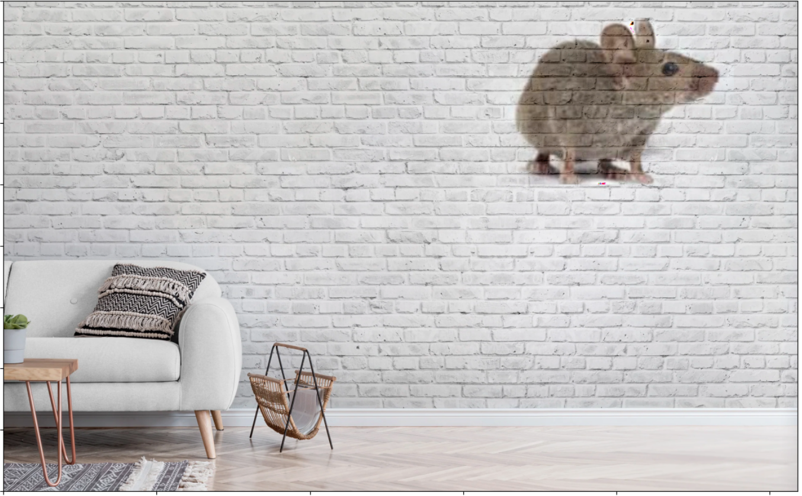
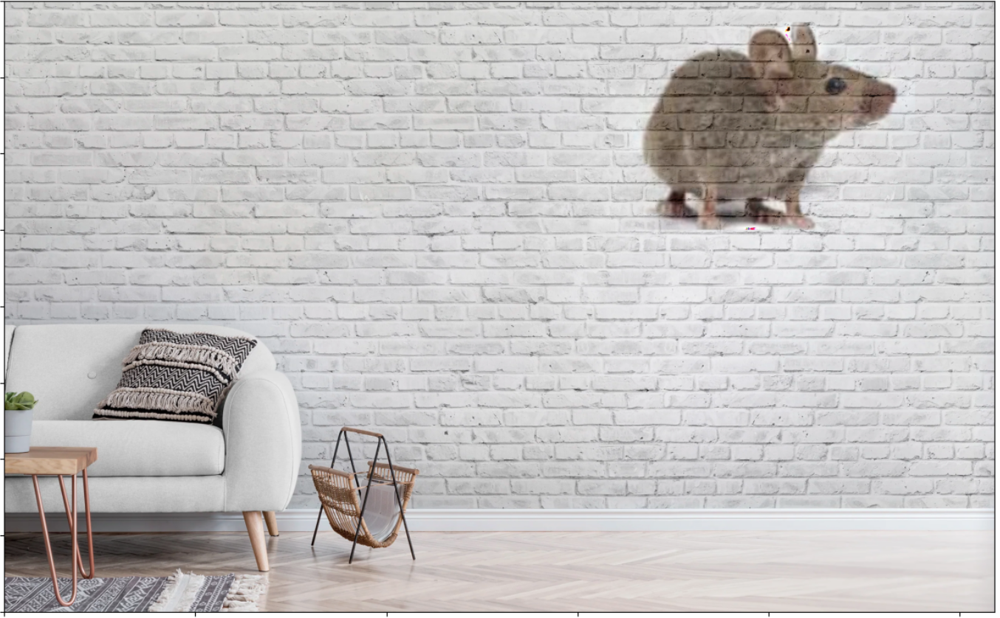
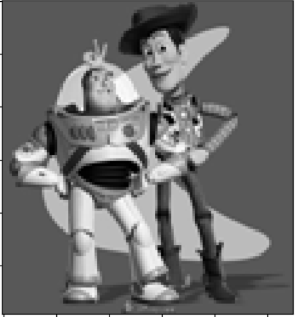
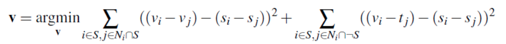
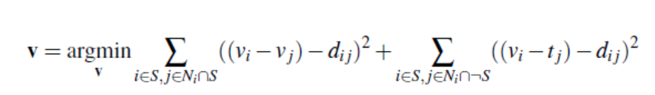
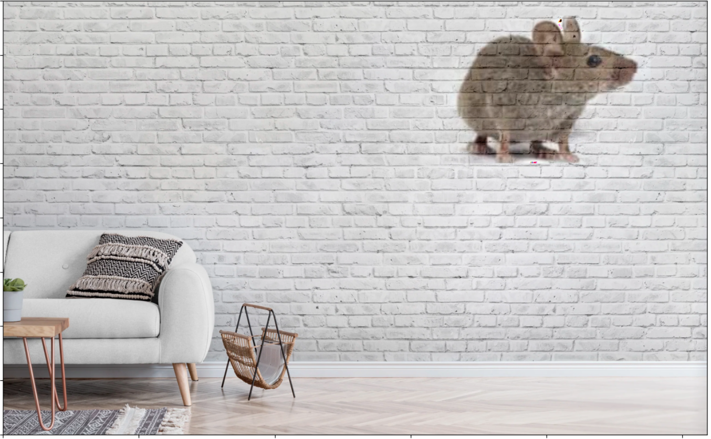
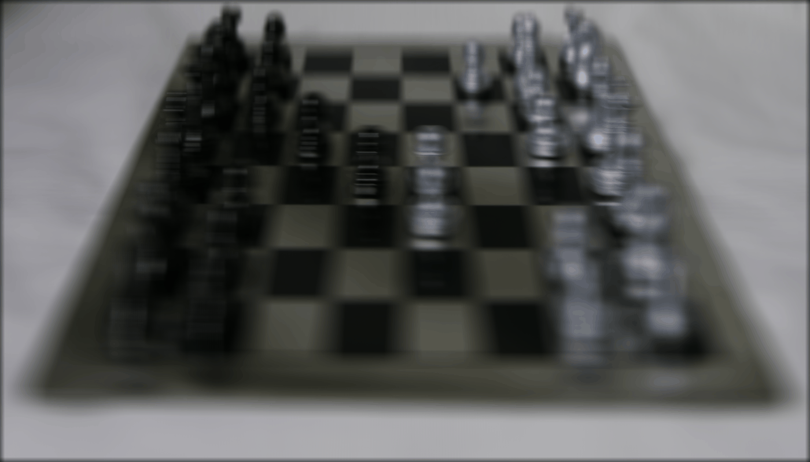
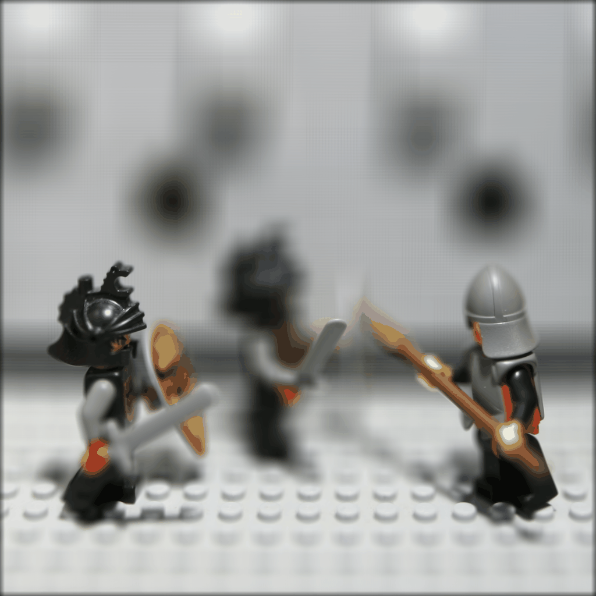
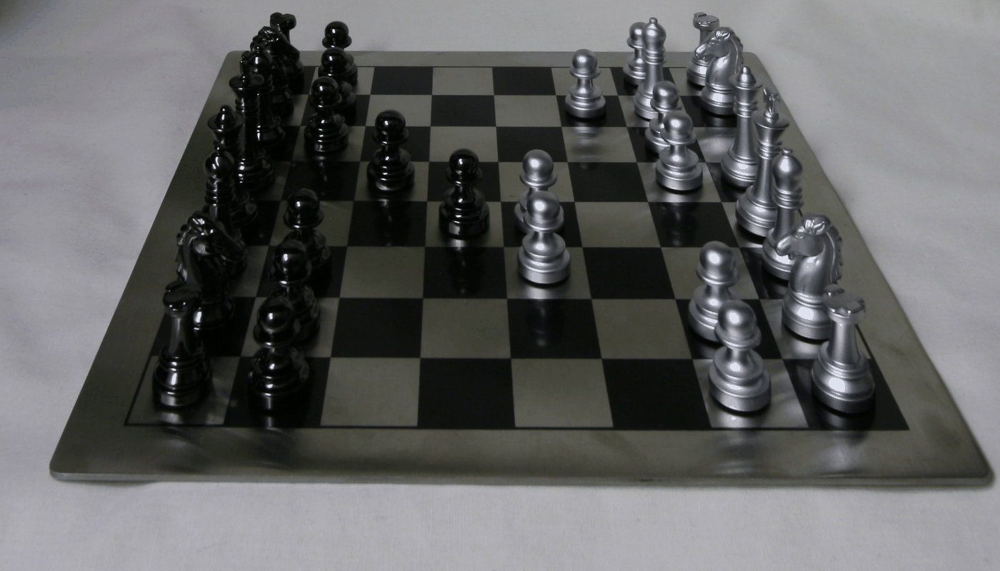
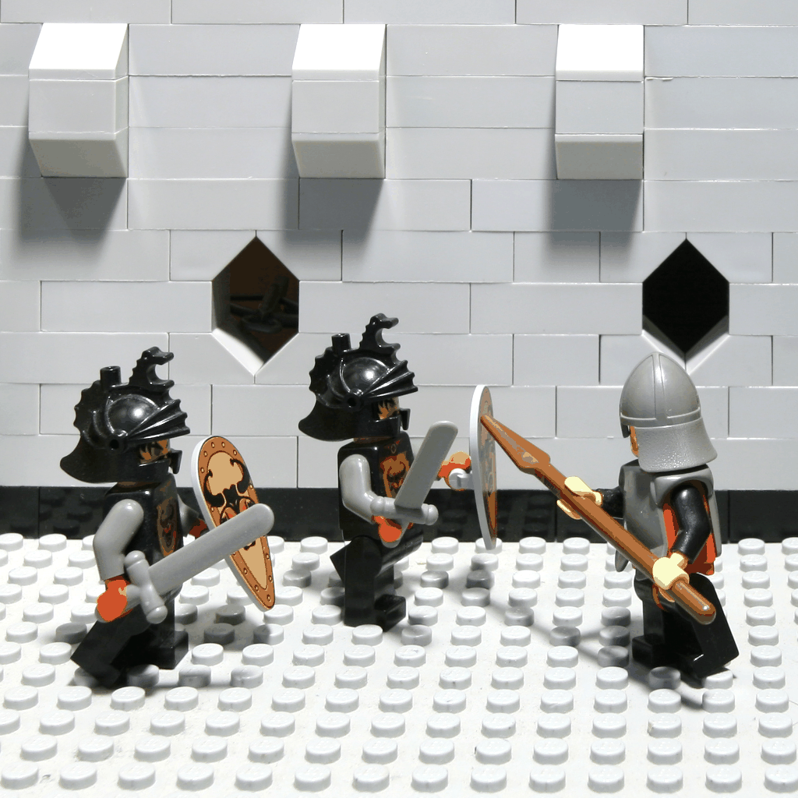

As we come to the end of the semester, I decided to implement two projects for my final project.
The first one "Gradient Domain Fusion" and the second being "Light Field Camera".
As mentioned in the project spec, we explore gradient-domain processing, a relatively simple technique for blending images together. In this case, we focus on "Poisson Blending".
The overall goal is to seamlessly blend an object/texture from a source image (object image) into a target image (background image).
Those who looked at my Project 2 implementation would know that we've done something similar already using Laplacian and Gaussian Pyramids.
For that project, we cared about overall intensity of the pixels. Instead, for this project, we'll look more into the gradient of the image. So, we set up the problem to find values for target pixels that MAXIMALLY preserve the gradient of the source region without altering the background pixels. Notice that we are completely ignoring the intensity of the images!
Before we actually implement the Poisson Blend, we should probably first have a sanity check. Firstly, we'll compute the gradients in the x and y direction of our source image, s. Then, using these graidents, plus a pixel intensity, we'll attempto to reconstruct an image, v.
We'll be using this toy image as our source image.

Denote the intensity of the source image at (x, y) as
s(x,y) and the values of the image to solve for as
v(x,y). For each pixel, then, we have two objectives:
| 1. | minimize (v(x+1,y) – v(x,y) – ( s(x+1,y) – s(x,y) ))2 |
the x-gradients of v should closely match the x-gradients of s |
| 2. | minimize (v(x,y+1) – v(x,y) – ( s(x,y+1) – s(x,y) ))2 |
the y-gradients of v should closely match the y-gradients of s |
Note that these could be solved while adding any constant value to v, so we will add one more objective:
| 3. | minimize (v(1,1) – s(1,1))2 |
The top left corners of the two images should be the same color |
If our solution is correct, then the overall error between both images should be negligble and the images should look more or less the same.
Below are the images of the Toy Problem.
The Max error between the two images is 0.0010002051356685637.
We create a system of linear equations that enforces gradient matching. For horzontal gradients, v(x, y + 1) - v(x, y) should match closely s(x, y + 1) - s(x, y). Similarly, for vertical gradients, v(x + 1, y) - v(x, y) should match closely with s(x + 1, y) - s(x, y).
We create a sparse matrix 'A' for the linear constraints and a vector 'b' captures gradient differences from source image.
We also ensure the top-left pixel matches the source's top-left pixel and use least squares sparse solution (LSQR) to solve our system, where we are minimizing the squared differences in the gradients.
Finally, we iterate through the image's pixels, building hte linera constraints. Finally, we solve the system to obtain our reconstructed image, v.
Now that we've done the Toy Problem, let's start with the Poisson Blending!
For this portion, we will be solving the following problem:
where 'v' is the output image, s is the source image we are blending, t is the target image, and (i, j) refers to the pixel that we are on.
The equation is minimizing two terms. The left term enforces that the gradients in v match the gradients in s. The sceond term enforces that the reconstructed values of vi should match ti, while perserving the gradients from the s.
You can think of the argmin as us finding the values of v that minimiize the overall expression.
Below are the results of a Naive implementation
We iterate through our three color channels. For each channel, we create a mapping 'im2var' that assigns a unique index to each pixel within the object mask. We set up a sparse linear system A and vector b for the Poisson blending constraints. The function then solves the sparse system using lsqr and applies the reconstructed v to our output image within the region of designation.
On top of Poisson Blending, we can also do Mixed Blending. Mixed blending follows the same formate as Poisson blending, but we use the gradient in the source or target image with the LARGER magnitutde instead of just the source gradient.
Remember, the constraints of v should match the gradient of the object image within the region of designation. Furthermore, for pixels on the boundary of the object region, we use the difference between the object image and the background image as a constraint.
Here "d_ij" is the value of the gradient from the source or the target image with larger magnitude, i.e. if abs(s_i-s_j) > abs(t_i-t_j), then d_ij = s_i-s_j; else d_ij = t_i-t_j. Show at least one result of blending using mixed gradients. One possibility is to blend a picture of writing on a plain background onto another image.
Above is the Naive, Poison, and Mixed blends respectively.
We do the same for more examples, here is a flower in a moutain.

It really showcases the strongsuit of the Mixed blending, while also demonstrating the Possion blending being useful to a degree!
Now here's a failure case:The reason why I think this fails is the fact that the source image in itself has a lot of textures. Furthermore, the texture is too drastic compared to the wall for the mouse example.
NOTE: I used a square for the mask for each of the images.
For our second project, we attempt to reproduce some cool effects using lightfield data.
A Lightfield camera takes images by absording light rays from every direction. As such, we can create images that look like they're moving!
In this part of the project, you will implement this idea to generate multiple images which focus at different depths.
Each dataset contains many images in a 17x17 grid where each (u, v) value represents the camera's location.
To refocus our image, we shift every image in the lightfield by shifting every sub-aperture towards the center image. Afterwards, we can average all the images together to 'refocus' the camera to the center point. We control the center point by a variable 'C'.
Below are some examples of this phenemena:
Here are the C Values that we are using: [-0.4 -1 0.4 0.8 1 1.25 1.5 2]
Here are the C Values that I used: [-0.4 -1 0.4 1 1.25 1.6 2.1 2.8 3.3]
Similarly, we can simulate readjusting the aperture by averaging a smaller subset of our images. In other words, the more images that we sample, the more larger our aperture is. We use a variable 'r' to determine which images to average. 'r' represnts the radius parameter, in which it is the maximum distance a sub-aperature can be from the center image that is allowable. In other words, the greater the 'r' value, the more images we allow, the more larger the aperture, the closer we are focused on the center point of our image. The 'r' value is compared with the (u, v) positions of the sub-aperatures.
Below are some examples!
Here are the R Values that were used: [0, 8, 16, 32, 64, 128]
The common point is set to a value of 0
Here are the R Values that were used: [0, 8, 16, 32, 64, 128, 256]
Furthermore, the common point is set to -1.
One of the things that I enjoyed from this portion is, for the aperture ajustment, the images ACTUALLY look like they're moving, when in reality, nothing of that sort is occuring!